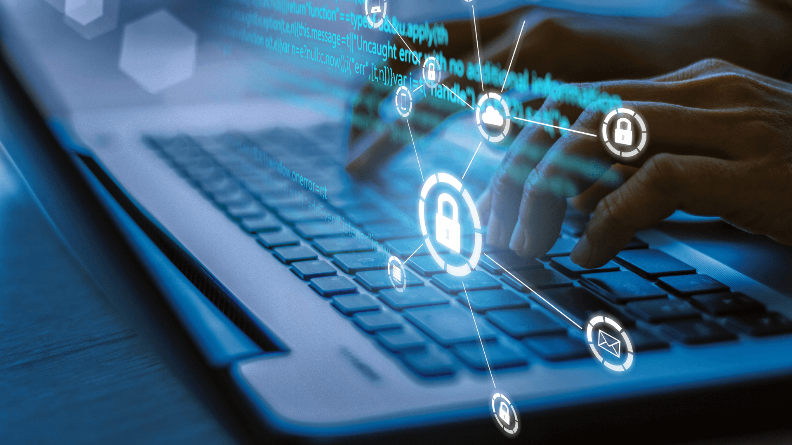

Malware
Malware betekent eigenlijk 'kwaadaardige software' en is een soort computerprogramma dat slechte bedoelingen heeft. Er zijn verschillende soorten:
- Trojan Horse: Dit verstopt zich in onschuldige bestanden en kan schade veroorzaken of een opening geven aan hackers.
- Worm: Een worm is als een zelfverspreidende virus die door computer- en internetnetwerken beweegt.
- Virus: Een virus besmet andere programma's en verspreidt zich terwijl het schade aanricht.
- Spyware: Dit soort malware probeert stiekem informatie over hoe je je computer gebruikt te krijgen en stuurt dat naar de maker van de spyware.
- Adware: Adware laat ongewenste advertenties zien op je computer, soms met vervelende extra functies zoals spyware.
- Ransomware: Ransomware vergrendelt je bestanden en vraagt dan om geld om ze weer vrij te geven.
Malware kan op verschillende manieren je computer binnenkomen, bijvoorbeeld via e-mails of als je dingen downloadt van het internet. Het is belangrijk om voorzichtig te zijn en je computer goed te beveiligen om te voorkomen dat malware schade aanricht.
